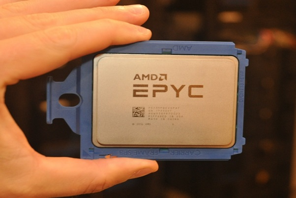
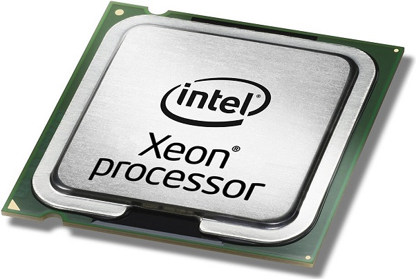
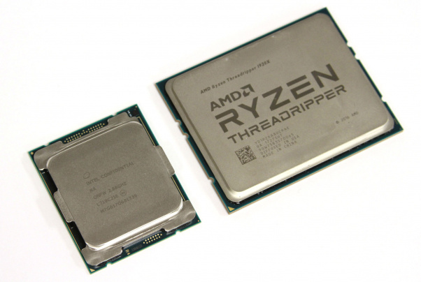
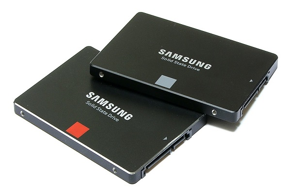
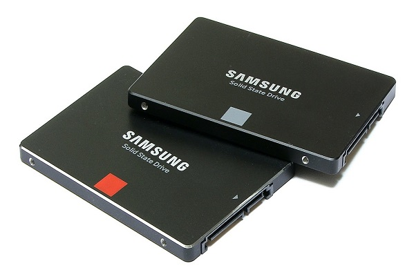
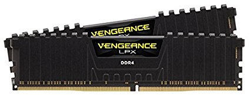
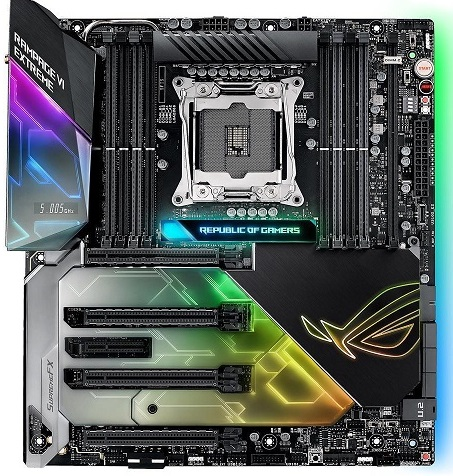
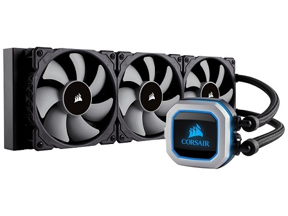

use case
Part choice
When choosing the parts you want to get a cpu and a motherboard that are compatible with each other.
If you choose a CPU that does not match the motherboard the CPU will not fit and will not work with
your motherboard. I recommend using PCPartPicker because you can choose all the parts you
want to use in your computer and it will show incompatibilities and issues with the parts you chose if there are any. It will
also show you the price of the system and where the best price for the part looking for at what store.
CPU Choice
When choosing a CPU you want to know are you going to be doing any CPU intensive task like video editing and streaming.
Or are you just going to be working with word and browsing the web. Also when choosing the CPU are you going to use
applications that can use multiple CPU cores like, editing and streaming or are you doing something like gaming that uses mainly
single core power. This will heavily influence the brand you want to choose and the GPU you go with. Intel and AMD also make CPUs
servers and they can get exspensive to say the least. They are ussualy high core and thread count proccesers and they run slow.
Intel calls there server CPUs Xeon and AMD calls there Epyc, they can start at around 1000$ and reach 10000$ and that is not including
the special motherboards you have to buy for them that cost 1000$ alone aswell. They both also offer worksation CPUs that also have
high core and thread counts there is not much of a diffrence but Xeon and epyc go into higher core count and there made for servers.
Intel calls there lineup I9 Intel extreme and AMD calls there lineup threadripper they range from 500$-1800$ and AMD stops at 1000$
https://www.phoronix.net/image.php?id=amd-epyc-7351p&image=epyc_7351p_1_med
https://images.anandtech.com/doci/9877/intel_xeon_lga.jpg
https://www.pcper.com/files/imagecache/article_max_width/review/2017-09-22/pic1.jpg
GPU Selection
When choosing your GPU it's pretty simple, what are you doing, because if you are just searcing the web you probably
won't need invest much into you GPU and may even getting away with integrated graphics in you CPU.
But if you are gaming or 3D modeling this is where most of your budget is going. If it is a personal rig
you will probbaly want to go with more consumer freindly cards like the geforce gtx or fx grapichs cards. But if you are build
a 3D modeling rig you will want to go with a workstation level card like the quadro lineup from Nividia

https://www.nvidia.com/content/dam/en-zz/Solutions/design-visualization/QuadroStore/nvidia-quadro-p6000-front.jpg
Quadro's can range from 1000$ to 10000$ they dont differ to much from the regular lineup but they are built and qulity tested to perfection
they also have other capabilities that you would use like NVLink which lets you use multiple at a time and many other things.
Storage
when choosing storage there are 2 main options you can go with, Hard Drive or SSD(Solid State Drive)
a hard drive is ussualy cheaper,has a larger storage capacity an SSD is more exspensive and tends to be
much lower capacity.The thing about an SSD is that its worlds faster than a Hard Drive and there is no moving parts.
when choosing the storage if you have the budget to an include an SSD then it is a good option but it is not
required. If you do get an SSD it will be where you want to install the OS(Operating System). You can have
both in one system so when you install the OS on the SSD the Hard Drive will be used for large files that
that you won't be accesing all the time like videos and pictures.
 

https://www.bhphotovideo.com/images/images2500x2500/western_digital_wd10ezex_1tb_wd_caviar_blue_903174.jpg
https://i.ytimg.com/vi/-XZNr7mS0iw/maxresdefault.jpg
There is 2 other types of storage but they are not used much because they are exspensive but they both SSDs
but they use a diffrent connection then the regular SSD that uses SATA Data cable. The first one an M.2 SSD
uses the M.2 slot on your motherboard

http://thessdreviewcdn2.thessdreview1.netdna-cdn.com/wp-content/uploads/2014/10/ASRock-X99-Extreme11-Motherboard-M.2-slots.jpg
An M.2 is small but very fast and they are increasing in popularity becuase there price is going down. The
other storage part is an SSD aswell, but instead if using the SATA or M.2 it uses your PCI-E slot that a GPU
would use.

https://techreport.com/r.x/freshstorage/p3700.jpg
it is also very fast much faster than a SATA SSD and has the advantage of having GB/s read and write speeds.
RAM
RAM is pretty straight forward if you are gaming 16gb of ram will probably be enough in 2018. If you are streaming and editing 32 or 64gb
would be really good.If you are just using your computer for web browsing 8gb will probably be enough.
https://images-na.ssl-images-amazon.com/images/I/41AGvSmY-fL._SX425_.jpg
One thing about choosing RAM is you want to keep in mind what company your CPU is from because AMD processers really
like fast RAM and you will get max performance out of your CPU.
Motherboard
when choosing your motherboard it all comes down to what parts you have chose and if you want to overclock or not.
For the most part there are 2 or 3 sets of motherboards that a CPU usually has a low end that has the bare minimum for
the computer. The middle of the road that has better features and also includes more USBs on the back IO and SATA plugs
for the storage. And the highend which is loaded with features and has everything you will need. Sometimes there is no
high end or low end. The middle is where you can get an unlocked motherboard for overclocking you CPU. The high has all
that and more features like RGB lighting and WIFI connectibility. Also the higher you go the more RAM slots and more SATA
slots there are, this also gets more depending on how high end the CPU is.They can come with screens that show problems and temps aswell.
https://images10.newegg.com/NeweggImage/ProductImageCompressAll1280/13-119-017-V01.jpg
When choosing you obviously want to get a motherboard that will suit your needs and also one that is compadible with your CPU.
You also want to see what kind of memory your RAM uses, most new ones use DDR4 but some can use DDR3 memory(DDR and the number is generation).
Power supply
The power supply is one of the main parts you do not want to skip out on. This will be suppling your computer with
power and so for obvious reasons you do not want to get a cheap power supply. When choosing what power supply you are
gonna want to choose based on needs like do you want to get a modular power supply (where you choose what power cables
you want to plug in and it looks better), or how high of a watage do you want your power supply to be. so you can supply
enough power to your PC parts. Dont choose something that is to over kill though because it can just be a waist of money.
The best way to tell if the power supply is trustworthy is if its 80 plus certified which will also tell you how
power efficent the power supply is.


https://en.wikipedia.org/wiki/80_Plus
https://images10.newegg.com/NeweggImage/ProductImageCompressAll1280/17-139-082-04.jpg
If you want to check your power supply you can go to the 80 plus website here
Chassis and Cooling
Case and cooling go hand in hand because the amount of airflow your case has will limit your cooling. There are 2
different kinds of cooling that are practical water cooling and air cooling. Air cooling is the easiest and you are
least likey to have problems with air.But the down side is that it doesnt cool as well as a water cooler would do.
There are also 2 types of water coolers coustom water loop and an AIO (all in one). A coustom water cooler is a water
cooling loop where you set up all the tubes your self and fill it with your own coolant. An AIO just comes in a box.
The tubes are already connected from a water block into a radiator and its basically plug and play.

https://images10.newegg.com/NeweggImage/ProductImageCompressAll1280/35-181-139%20%2001.jpg
https://www.performancepsu.com/wp-content/uploads/2014/04/budget-water-cooling-setup-1024x576.jpg
Air cooling is very simple, all you basically need the thermal paste and then depending on how the air cooler.
mounts, its typlicly easy to install an air cooler.

https://www.bequiet.com/en/cpucooler/pure-rock/795
The case is a very important part of your computer because depending on what size case and what kind of case you get
will determine what size of parts you want to by and it will also determine what kind of cooling performance you will get.

http://www.buildcomputers.net/computer-case-sizes.html